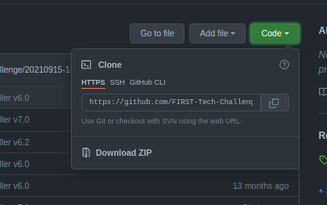
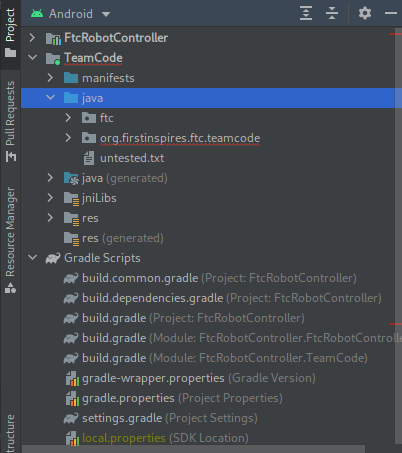

Note: Whenever *nix is used here, it refers to operating systems which are somehow based off of Unix, such as Linux, BSD, and such (while excluding Apple operating systems). If you didn't understand some of those words, don't worry: You don't have to.
Development Environment
Java
This step can usually be ignored, since most modern operating systems come with a Java installation
To start, you must first have Java installed. Java 8 or 11 should work, and if you can get Java 16, even better. For Windows or MacOS computers, go to the Oracle site and follow the installation instructions for your OS. For other *nix operating systems, follow the distribution-dependent instructions for installing java.
Android Studio
The editor will be an extension of your hand; the keys will sing as they slice their way through text and thought.
(Andrew Hunt and David Thomas, The Pragmatic Programmer)
Android Studio is an "IDE", or Integrated Development Environment. It serves the same purpose as a text editor, but has "Integrations", such as automatically formatting code and working with version control (TODO: Link this to version control page). The most relevant integration for FTC is donwloading code onto android devices.
To install Android Studio for Windows or MacOS computers, go to the Android Studio site and follow the installation instructions for your OS. For *nix operating systems, follow the distribution-dependent instructions for installing Android Studio.
You should definitely spend some time customizing and familiarizing yourself with Android Studio.
Project Setup
FTC Framework
Your entire project is based off the FTC framework. To begin a new FTC project, copy all of the code from the FTC repository into your own project. You can do this by clicking the "Code" button, then clicking "Download ZIP", as shown.

It is better, though, to use Version Control to do this. This is discussed more in the Version Control section (TODO!!).
You can then start writing your code in (and only in) the TeamCode/src/main/java directory.
In addition, if you open the project in Android Studio and switch to Android project view as shown, you can navigate to TeamCode/java to get to the same directory.

ElectronVolts Library
The latest version of the ElectronVolts library does not exist, as of yet, in its own repository. You can find a copy of it on the ElectronVolts github page, on the current year's repository and branch, in TeamCode/src/main/java/ftc. For example, during the 2021-2022 season, it was in FtcRobotController, on branch Season2021. Copy all the files in that directory to anywhere within your project's working folder.